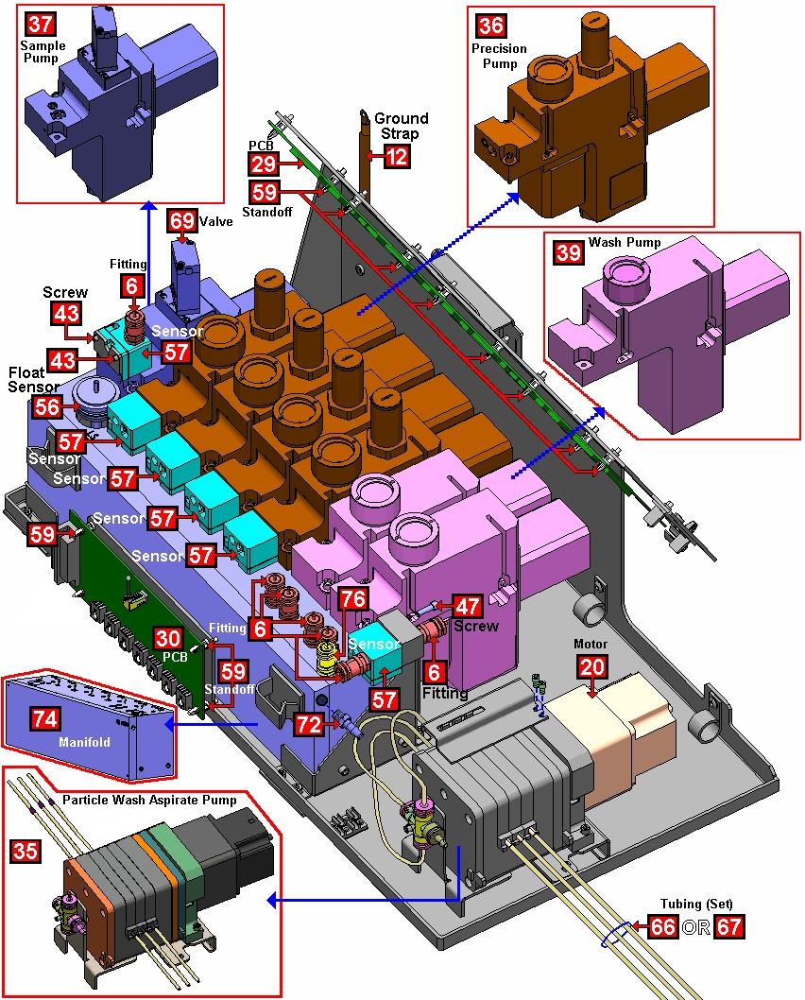
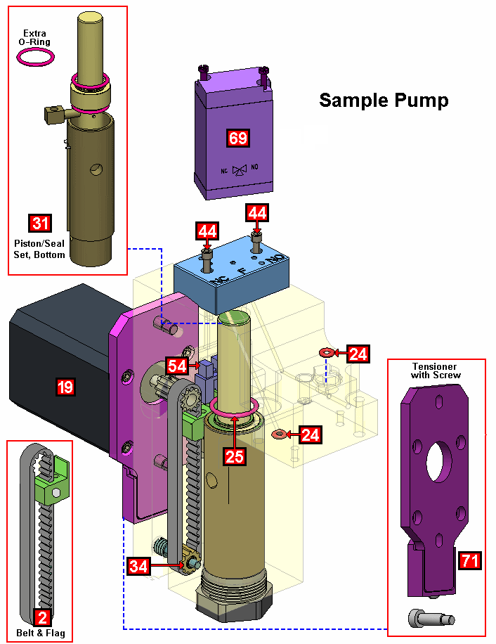
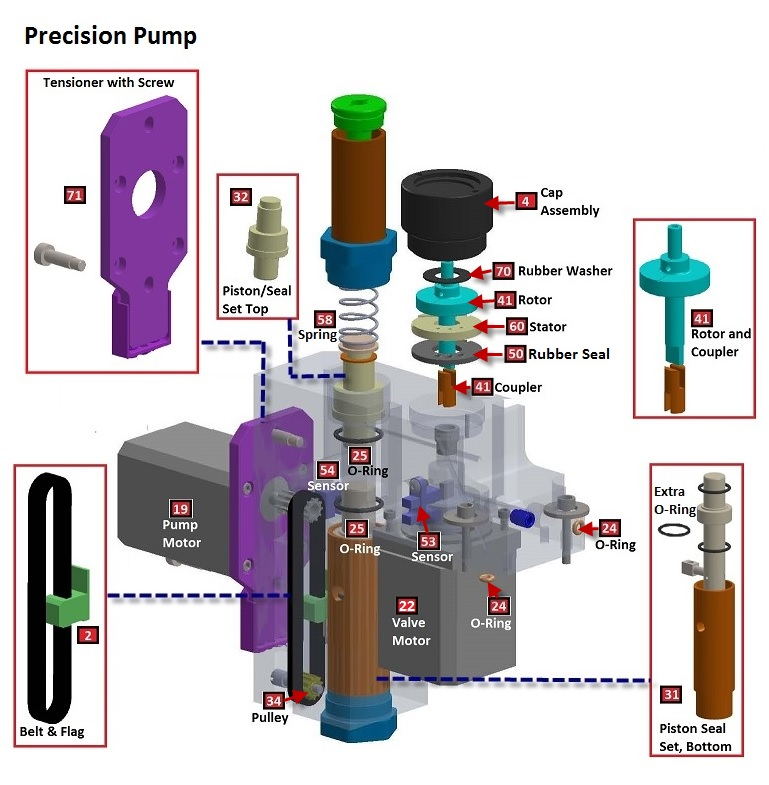
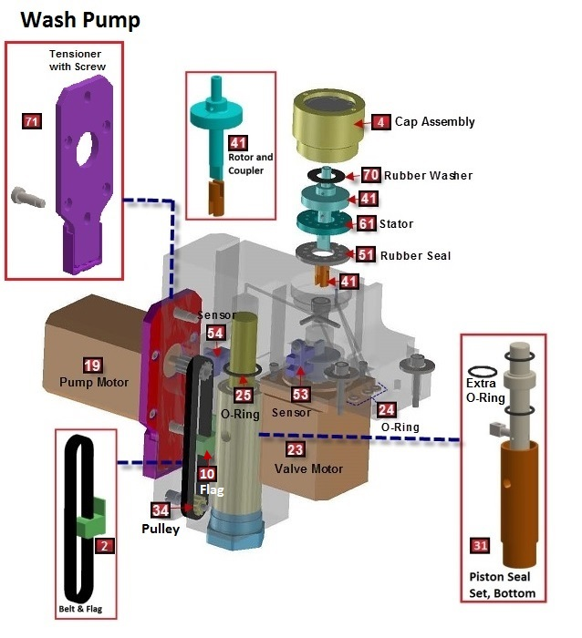
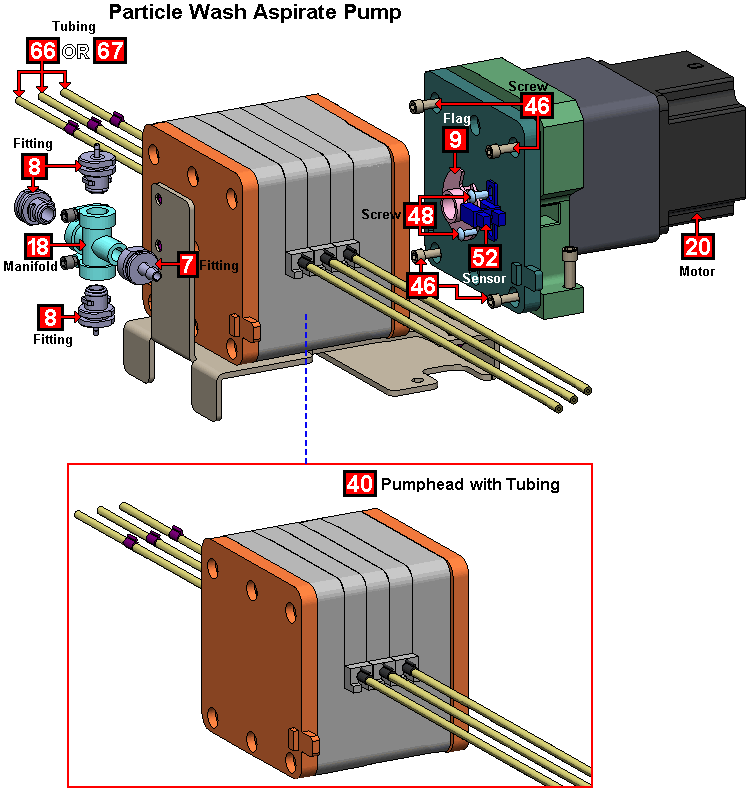
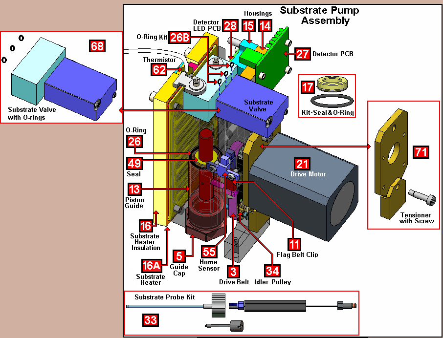
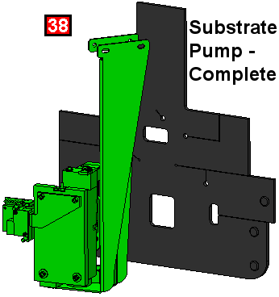
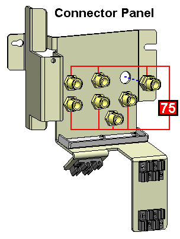
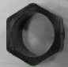
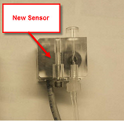

MODULE - FLUIDICS
| New/Packaged Number | Fluidics |
| Rebuilt Number | Module |
| Manufacturing Number | Parts |
| Tech Support Description | MODULE - FLUIDICS |
| Manufacturing Description | NA |
| Sales/Oracle Description | FLUIDICS MODULE |
| Main Assembly | Fluidics |
| Next Assembly | |
| Products Using Part | DxI 600;DxI 800 |
| Serial Number Cutoff |
Details
Locate the desired part on the drawing, then using the reference number, locate the part on the Part Number List tab. Parts without a reference number are only available by calling your local support organization.








Part Number List
To acquire part numbers for parts not listed, call the local support organization for your area.
| Ref No. | Description | Mfg. P/N | Oracle P/N | Notes |
|---|---|---|---|---|
| Not Shown | Bearing, Thrust, Cap, Valve | A16854 | A16854 | |
| 2 | Belt and Belt Clip, Urethane, Pump, Sample / Wash / Precision | A58782 | A58782 |
Sample, Precision, and Wash Pump. Kit includes gray belt and gray dot flag/clip. Parts are not available separately. Do not mix old and new style belts or belt clips. |
| Not Labeled | Top, Cap (Pump Cap Guide) | 02-007480-2 | N/A | Cap guide for Sample, Precision, and Wash Pump. Not an orderable part, contact Tech Support for assistance.
 |
| 3 | Belt, Pump, Substrate | 48-007537-3 | 75373 | Substrate Pump. |
| 4 | Cap Assembly, Ceramic Valve | N/A | A50007 | Precision & Wash Valves. Uses heavy duty thrust bearing. |
| 5 | Cap, Guide, Substrate Pump | 02-007564-2 | 75642 | Guide Cap, Bottom |
| Not Shown | TUBE, DISPENSE PROBE, A1W | C07451 | C07451 | Contains fitting only compatible with new pressure sensor part C10406. Fitting connects to new pressure sensor and tubing connects to aspirate probe#1 wash mount panel fitting. |
| Not Shown | TUBE, SAMP INT, DXI FLUIDICS | C07761 | C07761 | Only compatible with the sample pipettor service loop tubing and the new pressure sensor part C10406. Small section of tubing which connects the service loop tubing to the pressure sensor. |
| Not Shown | TUBE, ASSY, PIPETTOR, DXI | C07452 | C07452 | Reagent pipettor service loop tubing with CnS fitting and also contains the small section of tubing which connects the service loop tubing to new pressure sensor part C10406. |
| Not Shown | Tube, Sample Pipettor, PFA | A95649 | A95649 | Sample pipettor service loop tubing. Routes through the service loop chain. Connects the pipettor tube to the fitting (PN 02-011602-1) near the sample pump valve. Same tube is used for standard, Dual and LAS gantry. Tubing ID is 0.070. |
| Not Shown | FITTING, UNION, 1/4-28 FLARE | 02-011602-1 | 02-011602-1 | Union fitting used on both ends of the sample pipettor service loop tubing.

|
| Not Shown | Probe, Tube, Fluid | A92072 | A92072 | The short tubing connects to the service loop tubing and the sample probe. |
| 6 | Fitting, Locking, Quick Disconnect, 1/16 inch (red and white fitting with face seal) |
53-012956-2 (B30259) |
129562 (B30259) |
Used at the Sample Pipettor and Reagent Pipettor pressure sensors. Also used on the Wash Buffer reservoir connections to the Dispense Probe tubing. Red and white fitting not compatible with new pressure sensor part number C10406. On stockout order part number B30259. This kit contains one R&W fitting with face seal installed. (also might want B31949 bag of 6 if spare face O-rings) |
| 7 | Fitting, Quick Disconnect, Barb, 5/32 inch | 53-010798-1 | 107981 | 1 Used. Attached to the Particle Wash Aspirate Pump manifold. |
| 8 | Fitting, Quick Disconnect, Barb, 1/16 inch | 53-010805-1 | 108051 | 3 Used. Attached to the Particle Wash Aspirate Pump manifold. |
| 9 | Flag, Peristaltic Pump | 02-007665-2 | 76652 | Particle Wash Aspirate Peristaltic Pump |
| 11 | Flag / Belt Clip, Substrate Pump | 02-008058-4 | 80584 | Substrate Pump |
| 12 | Groundstrap, .5 inch x 11 inch ROHS | 09-012309-1 | 123091 | Fluidics Module |
| 13 | Guide, Piston, Substrate Pump | 02-007558-7 | 75587 | Substrate Pump. Replaced by C13357. |
| Guide, Piston, Substrate Pump | C13357 | C13357 | Substrate Pump. Replaces 75587 at stock out. | |
| ASSY, 2ML PISTON | 79613 | 79613 | Piston, Pump, Substrate (With Guide Pin). Same as Access 2 substrate pump. | |
| 14 | Housing, Bubble Detector Sensor | 02-012633-2 | 126332 |
Substrate Pump Replaced by C79145 at stockout |
| HOUSING, DETECTOR, SUBSTRATE BUBBLE DETECT | C79145 | C79145 |
Substrate Pump Replaces 126332 at stockout |
|
| 15 | Housing, Bubble Detector LED | 02-012634-2 | 126342 | Substrate Pump |
| 16 | Substrate Heater Insulation | 02-007762-3 | 77623 | Substrate heater (plastic) insulation only. |
| 16A | Substrate Heater | 01-011570-2 | N/A | Substrate heater. Not an orderable part, contact Tech Support for assistance. |
| Not Shown | INSULATION (FOAM), SUBSTRATE PUMP | 46-012559-2 | 46-012559-2 | Substrate pump housing foam insulator. |
| 17 | Kit, Seal & O-Ring | 01-008109-2 | 81092 | Substrate Pump seal & o-ring kit (same as Access) |
| Not Shown | Kit, Pump, Instrument Upgrade Kit | A58784 | A58784 | Kit to upgrade 1 DxI 800 instrument with tensioners and new belts. Kit contents: 7 Urethane belts, 7 Gray Dot Clip/Flags, 3 Tensioners. Piston/Seal/Guides must be ordered separately. |
| Not Shown | Kit, Sample Pump Hardware Upgrade Kit | A58781 | A58781 |
Kit to upgrade 1 Sample or 1 Wash Pump. Kit contents: Piston/Seal/Guide Assembly, 2 O-rings, Urethane Belt, Gray Dot Belt Clip/Flag, and Tensioner. Optional Tool to assist installation: A59751 1-1/16" Socket to secure black end cap with Torque Wrench. |
| Not Shown | Kit, Tubing | A38698 | A38698 |
Kit of 5 tubes with labels:
|
| 18 | Manifold, Fitting, 4 Port, Quick Disconnect | 53-010796-1 | 107961 | 1 used: Attached to the Particle Wash Aspirate Pump. (peri tubing attaches to the fittings on this manifold). |
| 19 | Motor, Pump ROHS | 01-010098-1 | 100981 | Sample, Precision, and Wash Pumps. |
| 20 | Motor, Particle Wash Aspirate ROHS | 01-010337-2 | 103372 | Replaces 103371 at stockout. Particle Wash Aspirate Peristaltic Pump |
| 21 | Motor, Substrate Pump ROHS | 01-010919-3 | 109193 | For Substrate Pump |
| 22 | Motor, Valve, Precision ROHS | 01-010112-4 | 101124 | Precision Pump Valve |
| 23 | Motor, Valve, Wash ROHS | C43411 | C43411 | Wash Pump Valve. Replaces 123422. |
| 24 | O-Ring | 46-010127-1 | 101271 |
Sample, Wash, & Precision Pumps (small o-rings)
|
| 25 | O-Ring | A52113 | A52113 | Sample, Wash & Precision Pumps. Used as a seal inside each New Floating Seal Reliability Pump (3 for precision Pump & 2 for Sample & Wash Pumps). This o-ring is a higher durometer than the previous o-ring used in old design (brown Delrin guide) pumps. |
| 26 | O-Ring | 46-007730-2 | 77302 | Substrate Pump Piston Guide to manifold (same as Access) |
| 26B | O-Ring, Kit, Manifold, Substrate | A81682 | A81682 | The kit includes 3 o-rings which are between the substrate pump and valve. |
| 27 | PCB, Bubble Detect, Sensor, Substrate. ROHS | B07206 | B07206 |
Replaces 11114C. Rev "C" PCBs were implemented on serial number 600312 and all DxI 600, reversing the gender from the Rev "B" PCBs. Replacement of either half of the LED & SENSOR PCB pair requires the matching half to be of the opposite gender. Order both PCBs (A84321 & B07206) together if either half of a Rev "A" or Rev "B" PCB pair fails. |
| 28 | PCB, Bubble Detect, Source LED Assy, Substrate. ROHS | A84321 | A84321 | Assembly contains PCB B07208, not available separately. Replaces 11115C. RoHS compliant PCB, no other changes. Rev "C" PCBs were implemented on serial number 600312 and all DxI 600, reversing the gender from the Rev "B" PCBs. Replacement of either half of the LED & SENSOR PCB pair requires the matching half to be of the opposite gender. Order both PCBs (A84321 & B07206) together if either half of a Rev "A" or Rev "B" PCB pair fails. |
| 29 | PCB, Interface, Fluidics ROHS | B06473 | B06473 | Replaces 11007C. Located above fluidics pumps. |
| 30 | PCB, Pressure Sensor Interface ROHS | B07277 | B07277 | Located in front of Buffer Reservoir. Repalces 11130A. |
| 31 | Piston/Seal Set, Bottom And O-rings (Precision Pump) | A58783 | A58783 |
Attempt cleaning pump piston and sleeve per service manual procedure prior to replacement. In most cases, cleaning the pump and sleeve is sufficient for resolving issues. Replaces A28882. Includes 3 new style o-rings (1 for either side of lower seal, and 1 for upper pump container. Can also be used in a Sample and Wash Pump, but discard 1 of the o-rings) Option Tool to assist installation: A59751 1-1/16" Socket to secure black end cap with Torque Wrench. |
| Not Labeled | Seat, Spring, Top Piston | A23827 | A23827 | The spring seat or cap on the upper piston. |
| Not Labeled | Ring, Retaining, Piston, Upper | A23828 | A23828 | The retaining ring wraps under the spring seat or cap on the upper piston. |
| 32 | Piston/Seal Set, Top | 02-010101-1 | 101011 | Upper piston. Contains only 1 precision pump ceramic piston/seal set. Does not include the spring seat ("cap"). |
| 33 | Probe, Substrate / Substrate Probe - Kit | A25989 | A25989 |
Includes:
For performing Mod 6718. Replaces P/N 129933. |
| 34 | Pulley, Idler, Aluminum | A95535 | A95535 | Required for the Sample Pump. Replaces part 75483 for all pumps. |
| 35 | Pump, Peristaltic, 3 Channel - Assembly DxI 800 ROHS | A80184 | A80184 | For DxI 800 use only Particle Wash Aspirate Pump (Peri pump) - FS only. Boxed & Tested. This is the Aspirate PERIPUMP with cassettes. |
| Pump, Peristaltic, 3 Channel - Assembly DxI 600 ROHS | A80183 | A80183 | For DxI 600 use only Particle Wash Aspirate Pump (Peri) - FS only. Boxed & Tested | |
| 36 | F/S Kit, Precision Pump & Valve ROHS | C09559 | C09559 |
Boxed & Tested - Field Service Only (Includes Valve). Replaces A58775. Replacement of entire pump assemblies should be avoided whenever possible. Pump cleaning or repair using components should be sufficient to resolve nearly all issues. If acrylic pump housing is cracked, replace housing only (C68754 or A46356 below). |
| Not Shown | FS Kit, DXI Precision Pump Housing Assy | C68754 | C68754 |
Pump housing includes a new retainer plate at the bottom of the housing. Cut in serial numbers:
Replaces A46356 at stockout. |
| Not Shown | Housing, Pump, Precision | A46356 | A46356 |
Acrylic pump housing only, does not include pump components. Replaced by C68754 at stockout. |
| 37 | Pump, Sample - Assembly ROHS | A58778 | A58778 |
Boxed & Tested - Field Service Only (Includes Valve) includes PEEK piston guide, urethane belt, gray dot belt clip, and tensioner. Replaces 386199 at stock out. Replacement of entire pump assemblies should be avoided whenever possible. Pump cleaning or repair using components should be sufficient to resolve nearly all issues. If acrylic pump housing is cracked, replace housing only (C68753 or A46454 below). |
| Not Shown | FS Kit, DXI Sample Pump Housing Assy | C68753 | C68753 |
Pump housing includes a new retainer plate at the bottom of the housing. Cut in serial numbers:
Replaces A46454 at stockout. |
| Not Shown | Housing, Pump, Sample | A46454 | A46454 |
Acrylic pump housing only, does not include pump components. Replaced by C68753 at stockout. |
| 38 | Pump, Substrate - Assembly ROHS | 01-010307-4 | 386201 |
Boxed & Tested - Field Service Only (Includes Valve and thermistor, does NOT include probe). Replacement of entire pump assemblies should be avoided whenever possible. Pump cleaning or repair using components should be sufficient to resolve nearly all issues. If acrylic pump housing is cracked, replace housing only (2-007769-5 below). |
| Not Shown | Housing, Pump, Substrate | 02-0077695-5 | 2-007769-5 | Acrylic pump housing only, does not include pump components. |
| 39 | Pump, Wash - Assembly ROHS | A59481 | A59481 |
Boxed & Tested - Field Service Only (Includes Valve). Replaces 386202. Replacement of entire pump assemblies should be avoided whenever possible. Pump cleaning or repair using components should be sufficient to resolve nearly all issues. If acrylic pump housing is cracked, replace housing only (C68755 or 02-010004-2 below). |
| Not Shown | FS Kit, DXI Wash Pump Housing Assy | C68755 | C68755 |
Pump housing includes a new retainer plate at the bottom of the housing. Cut in serial numbers:
Replaces at 02-010004-2 at stockout. |
| Not Shown | Housing, Pump, Wash | 02-010004-2 | 02-010004-2 |
Acrylic pump housing only, does not include pump components. Replaced by C68755 at stockout. |
| 40 | Pumphead, Peristaltic with Tubing | A80182 | A80182 | Peristaltic Pump Head only (no motor) with tubing (3 of part 77372). Order to complete MOD 10260. |
| 41 | F/S Kit, Valve Rotor & Coupler | C18015 | C18015 | Replaced 101061. |
| 43 | Screw, Socket Head, with Adhesive, 4-40 X 1/4 inch | 40-001846D | 1846D |
4 used in each of these pumps to attach the pump motor to the motor mounting bracket:
2 used to attach Fluid Deflector to front of Sample Pump Pressure Sensor. |
| 44 | Screw, Socket Head, with Adhesive, 4-40 X 3/8 inch | 40-001846F | 1846F |
2 used: Attach Sample Pump Valve Adaptor to Pump Housing. |
| 46 | Screw, Socket Head, with Adhesive, 6-32 X 3/8 inch | 40-001847F | 1847F | 4 used: Particle Wash Aspirate Peristaltic Pump |
| 47 | Screw, Socket Head, with Adhesive, 8-32 X 1/2 inch | 40-001848H | 1848H | 1 used to attach right end pressure sensor. Particle Wash Aspirate Pump (Peri) |
| 48 | Screw, Button Socket Head, with Adhesive, 4-40 X 1/4 inch | 40-001852D | 1852D | 2 used to Mount Particle Wash Aspirate Pump (Peri) Index/Home Sensor |
| 49 | Seal, Shaft, Bottom, Substrate Pump | 46-007731-4 | 77314 | Substrate Pump (same as Access) |
| 50 | Seal, Valve, Precision | 61-010109-1 | 101091 | Located under Precision Valve stator. |
| 51 | Seal, Valve, Wash | A51470 | A51470 | Replaces part 75863. Located under Wash Valve stator. Molded seal. |
| 52 | Sensor, Index, Pump, Particle Wash Aspirate ROHS | 01-008177A | 8177A | Particle Wash/Aspirate Probe (Peristaltic Pump) Home/index. 14 inch leads. |
| 53 | Sensor, Home, Valve, Wash / Precision ROHS | 09-010900-1 | 109001 | 8 inch leads. |
| 54 | Sensor, Home, Pump, Sample / Precision / Wash ROHS | 09-007879B | 7879B | 8 inch leads. |
| 55 | Sensor, Home, Pump, Substrate ROHS | 09-012603-1 | 126031 | Also used as a temporary universal replacement for any same type sensor. Order correct sensor & replace at a later date. 33 Inch Leads |
| 56 | Sensor, Fluid Level, Reservoir ROHS | C96805 | C96805 | Buffer Upper Reservoir Float
Replaces B37881 at stockout. Suzhou cut in: S/N 630662 |
| Sensor, Fluid Level, Reservoir ROHS | B37881 | B37881 | Buffer Upper Reservoir Float
Replaced by C96805. |
|
| 57 |
Sensor, Pressure, Fluid (ROHS) NO LONGER INCLUDES TUBING |
C10406 | C10406 |
Replaces A46455. Not compatible with red/white fittings. Includes o-ring for sealing to pump and metal block-off plate. Metal block off plate in kit is only used on sample pump pressure sensor. Qty 2 of 1846D (Screw, Socket Head, with Adhesive, 4-40 X 1/4 inch) are not included in the kit, but are needed to attach the metal block off plate to the sample pump pressure sensor.
KIT NO LONGER INCLUDES TUBING. Order tubing separately if needed, or when replacing "old" sensor with red/white 1/4 turn fitting:
6 used on DxI 800 (4 on DxI 600):
 |
| FST,O-RING, AS568-005 | 46-010127-1 | 101271 |
Sample, Wash, & Precision Pumps (small o-rings)
|
|
| 58 | Spring, Compression | NA | A51332 | Precision Pump. Same as in Access Precision Pump. |
| 59 | Standoff, PCB, Nylon, .250 inch | 45-007774A | 7774A | 14 used in module. |
| 60 | Stator, Valve, Precision | 02-010107-2 | 101072 | |
| 61 | Stator, Valve, Wash | 02-010264-2 | A16121 | |
| 62 | Thermistor, Substrate Heater Temperature ROHS | 01-012601-1 | 126011 | 10-32 Stud, 47 inch long. This is also the specified universal thermistor, temporarily usable in any stud type thermistor location. |
| Not Shown | Tie, Cable, 5-3/8 inch | 44-006699C | 6699C | |
| Not Shown | Tubing, Supply, Substrate (DxI 800 only) | A47649 | A47649 | DxI 800 only (18 inches long). From Loader manifold (output) to Substrate Pump (Input). Has click and seal fittings. |
| Not Shown | Tubing, Supply, Substrate (DxI 600) | A47651 | A47651 | DxI 600 (24 inches long). From Loader manifold (output) to Substrate Pump (Input). Has click and seal fittings. |
| 66 | Tubing, Peristaltic Pump | 56-007737-2 | 77372 | 3 used. Routes through the Aspirate Peristaltic Pump tubing with positioning clips. 17.9 inches long. Same as Access. |
| 68 | Valve, Substrate Pump with O-rings ROHS | B16593 | B16593 | Substrate Pump Valve with 3 O-rings. Attaches to top of Substrate Pump. |
| 69 | VALVE, 3 WAY, SAMPLE PIP | C41827 | C41827 |
Sample Pump Valve only (does not include manifold). NOT compatible with old Valve Adapter 02-012411-2. ONLY compatible with new Valve Adapter D26732. Also order Valve Adapter D26732 or order complete upgrade kit D33182 if needed. Replaces 124101 at stockout. |
| Valve Assembly, Pump, Sample ROHS | 09-012410-1 | 124101 |
Sample Pump Valve only (does not include manifold). NOT compatible with new Valve Adapter D26732. ONLY compatible with old Valve Adapter 02-012411-2. Order complete upgrade kit D33182 if needed. Replaced by C41827 at stockout. |
|
| Kit, Sample Pump Valve W/ Adapter | D33182 | D33182 |
Sample Pump Valve Assembly and Valve Adapter upgrade kit. Kit contains:
C41827 and D26732 cut-in serial numbers:
|
|
| Not Labeled | Valve Adapter | D26732 | D26732 |
NOT compatible with Valve Assembly 124101. ONLY compatible with Valve Assembly C41827. Does not include o-rings (qty 3 of 101271) between adapter and fluidics manifold. Also order Valve Assembly C41827 or order complete upgrade kit D33182 if needed. |
| 70 | Washer, Valve | 02-007964-2 | 79642 | Wash & Precision Valves (black rubber flat Washer that sits on top of each rotor) |
| 71 | Tensioner, Motor Mounting Bracket | A52044 | A52044 | |
| 72 | Fitting, Inlet, Reservoir | 53-012267-1 | 122671 | Fitting for the wash buffer inlet line to the fluidics manifold. |
| 74 | Manifold, Fluidics | A46359 | A46359 | Part consists of the manifold only (nothing attached to it) |
| 75 |
Kit, Coupling, Panel Mount
|
53-012813-1 | A80404 |
Couplers that connect the peripump tubing and aspirate probe tubing. The kit contains 7 couplers (fittings). At stockout, order Alternative Couple Assembly Kit part# C96397. |
|
Alternate Coupling Assembly, Kit 
|
C96397 | C96397 | Order when A80404 at stockout. | |
| 76 | Fitting, Locking, Quick Disconnect, 3/16 inch Barb | 53-012960-1 | 53-012960-1 | Wash buffer vent fitting. Larger barb than p/n 129562 red/white fittings. |
| Not Shown | Kit containing 6 face seals | B31949 | B31949 |
Not used with pressure sensor C10406. Kit containing 6 face seals for use with R&W fittings at Sample Pipettor and Reagent Pipettor pressure sensors, also on the Wash Buffer reservoir - connects to tubing to the Dispense Probes. |